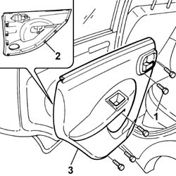
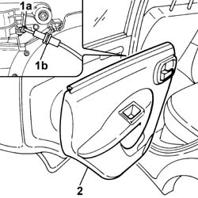
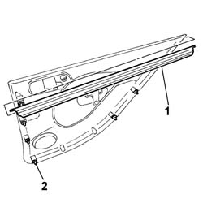

7010E10 rear side door inner panel - r r or replace
- Path
- Procedures > 70 FITTINGS > 7010 PASSENGER COMPARTMENT REAR SIDE DOORS > 7010E rear side door trim > 7010E10 rear side door inner panel - r r or replace
- Kind
- repair procedure (removal / refitting; the operation number is the code)
- Applies to
- all engines; all production periods
- Interactive page
- https://sloeber94.github.io/elrnDB-fPnd/en/#/2753111
Applies to: all engines; all production periods
 Removing
Removing
 Refitting
Refitting7005D38 front side door manual window mechanism handle ring-nut - r r
7005C44 interior handle panel - r r
1. Undo the retaining bolts.
2. Release the fixing buttons using the special tool.
 | Name | Country |
|---|---|---|
- | Scraper blade | 1.878.077.000 |
3. Extract the internal door panel.

Applies to: all engines; all production periods
1. Open the clip (1a) and disconnect the door opening rod (1b).
2. Remove the internal door panel.

Applies to: all engines; all production periods
If the internal door panel has to be replaced, carry out the procedures described below.
1. Release the interior glass scraper and remove it.
2. Keep the fixing buttons.

Applies to: all engines; all production periods
Refitting
RemovingIf the internal door panel has to be replaced, carry out the procedures described below.
Position the interior glass scraper in its housing on the internal door panel.
Position the fixing buttons taking care to replace any damaged ones.
If the internal door panel is being reused, carry out the procedures described below.
Check that the internal door panel is not damaged and that the retainers are intact and correctly positioned.
Connect the door opening rod and secure it using the special clip.
Place the internal door panel in position and secure it using the special fixing buttons.
Tighten the bolts fixing the internal door panel.
7005C44 interior handle panel - r r
7005D38 front side door manual window mechanism handle ring-nut - r r
Topics linked from this page (2)
- 7005C44 interior handle panel - r r
- 7005D38 front side door manual window mechanism handle ring-nut - r r
Topics that link to this page (13)
- 5505B21 rear door wiring - r r
- 7010A05 rear side door water guard protection-r r or arrange
- 7010A28 rear side door opening limiter-r r
- 7010C11 rear side door outside handle-r r
- 7010C53 INTERNAL HANDLE of rear door opening relay. (one), left or right - R.R .
- 7010C65 handle link to lock - r r
- 7010D15 rear side door descending window glass-r r
- 7010D23 rear side door descending window glass guide one-r r
- 7010D30 rear side descending window glass scraper (inner) r r
- 7010D35 rear side door manual window glass-r r
- 7010N21 rear side door lock motor-lock assembly r r
- 7055B38 SCUFF PANEL SIDE MOULDING (ONE) - R+R
- 7205E38 Stripping REAR SIDE DOOR